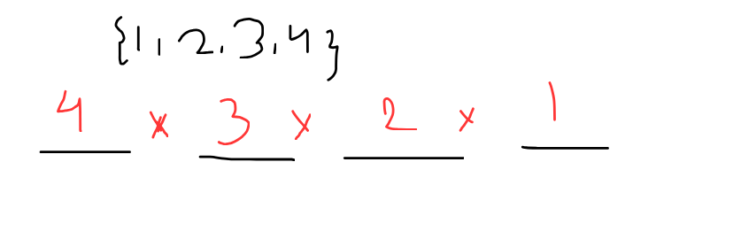

Binomial Theorem, More like cool stuff
Binomial theorem and its application!
This page would be dedicated to explaining binomial theorem and its application where we would see some of the you know combinatorics too.
\[start!\]Usually when we think about binomial theorem, we think of??/ idk, cause i haven't it now lol
The theory!
Imagine you have a set, and then
\[S = [1,2,3,4] \]My question is that, in how many ways we can arrange this sequence, like in how many ways we can permutate this?
The answer is pretty silly hehe
___ ____ ____ ____Imagine you have like four blanks, in which you want to fill the numbers, but like you have this set \([1,2,3,4]\) so in the first box we have 4 choices to select, like we can take any number from this set and put here in the blank 1, then we have the set (let us imagine out of 4 optinos we picked 3), then we have the remaining set as \([1, 2, 4]\), and then what we can say is that??? we have now 3 options left, but now whtat we can do is something cool, now out of these 3 we have to select one which has 3 ways, so its like something like this

hence we have total of 12 ways of arranging this sequence, !!
Now lemme generalise this result!, it was just a introduction but you are supposed to prove all the results by yourself, cause i wanna move to binomial lol
Some general results and notations i am gonna use!
\[{n \choose k} = \frac{n!}{(n-k)!*k!} \]This means like choosing k objects out of n objects!
Binomail theorem formalism
We have a binomial thereom proof and a good formalism, we can see to understand it more beuaitfully
Lets see \((a+b)^{0} \) and hmm this could be seen as a binary tree with 0 level, just like a point, but the main thing comes next, now lest imagine \((a+b)^1 \), hmm here lets imagine a binary tree with rules, if we go to lest we write a, and right we go we write b.
what about when we have something like \((a+b)^2 \) , hm then we imagine a binary tree with 2 levels, following the same rule.

now i guess you got the 3 one, but lemme draw,
since you have now got a hang of it, could you see the coefieicnt of term are like imagine this if you have \((a+b)^n \) then the coeffience of \(a^m \cdot b^k\) would be something like \({n \choose k}\) or \({n \choose m}\) since the degree is n lol
Yeah so we noticed one property, but i want you to prove this with a combinatoral argument, that \( {n \choose k} = {n \choose n-k} \) proving this is very easy, but i really want you to try with a 2 proof, one algebriacally and one combinatorially
Some binomial property and proving problems!
I want you to prove every result i am writing here!
\[(x+y)^n = {n \choose 0}x^0 y^n + {n \choose 1}x^1 y^{n-1} +...+ {n \choose n}x^n y^0 \] \[ {n \choose k}+{n \choose k-1}= {n+1 \choose k} \] \[ {n \choose 0} + {n \choose 1} + {n \choose 2} +...+ {n \choose n} = 2^n \]